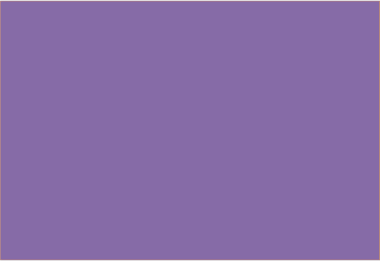
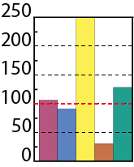

Культурне обслуговування населення
Забезпеченість населення установами культури і мистецтва*
(установ на 1 тис. осіб, 2017 р.)
| до 2,0 | |
| 2,1-4,0 | |
| 4,1-5,0 | |
|  | понад 5,0 |
* у розрахунку використано дані про чисельність наявного населення України на 01 січня 2017 р.
Ресурсний потенціал сфери культури і мистецтва за регіонами
(відхилення від середнього в Україні; %, 2017 р.)
|  |
| бібліотечний фонд, прим. у розрахунку на 100 осіб | |
| кількість місць у клубних закладах у розрахунку на 100 осіб | |
| кількість концертних організацій і професійних творчих колективів, одиниць | |
| кількість музеїв у розрахунку на 10 тис. осіб | |
| кількість місць у театрах у розрахунку на 10 тис. осіб |
Спеціалізація установ сфери культури і мистецтва
| циркові заклади | |
| музичні заклади | |
| навчальні заклади | |
| науково-дослідні та методичні установи | |
| кіностудії | |
| національні творчі спілки | |
| обласні центри народної творчості | |
| театри |